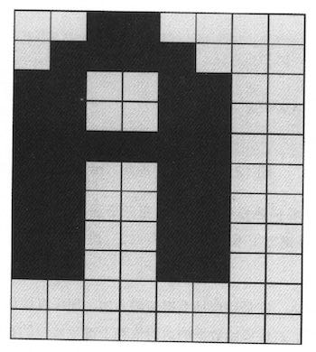

Nand2Tetris 计算机系统要素 软件篇
Table of Contents
这个部分内容涉及到汇编器，编译器，操作系统。有几个地方因为以前没有接触过，所以实现起来比较有意思。
1. 汇编器符号解析
汇编器代码比较简单直接，基本上都是一条汇编指令对应一条机器指令，可能稍微有点难度的就是符合解析。
因为汇编代码里面的符号是不用提前声明的，所以符合解析需要使用额外的一遍遍历，找到符号对应的地址。
Hack符号有两类：1. 地址符号 2. 变量符号。在Hack实现里面，地址符号通过 `(label)` 方式声明，如果不是地址符号就是变量符号。 但是如果我们链接的时候，某个地址符号找不到的话，那么就会跳转到变量符号，出现执行错误。如何发现这类错误呢？
一个办法是，通常地址符号后面跟着 JMP 指令。所以可以假设，如果JMP指令之前的指令不是地址符号的话，那么很可能就是找不到符号。 这个问题在 homework 09 的时候，如果没有把 OS 代码放进来的话，那么在产生 asm 文件的时候就会出现问题。
def build_var_symtable(self):
offset = 16
for (i,inst) in enumerate(self.insts):
if isinstance(inst, AInst):
# absolute address or label.
if isinstance(inst.addr, int) or \
inst.addr in self.symtable:
pass
else:
# 如果下面一条是跳转指令的话，那么说明链接错误
if (i+1) < len(self.insts):
inst2 = self.insts[i+1]
if isinstance(inst2, CInst) and inst2.jump is not None:
print('[WARNING] jump inst follows non-address label. {} -> {}'.format(
inst, inst2))
if self.debug:
print('var {} -> {}'.format(inst.addr, offset))
self.symtable[inst.addr] = offset
offset += 1
不过这种检测方式，很大程度上取决编译器生成的代码。如果编译器把函数调用产生的 boilerplate 代码变换一下，那么这种方式就不管用了。 当然编译器也可以在输出上做些文章，对于地址符号可以增加部分输出，告诉汇编器“这必须是一个地址符号”。
在编译器里面添加特殊标识符，声明这是一个函数符号 `//# :fn`.
text = f"""
// push stack size to R13
@{stack_size}
D=A
@R13
M=D
// push jump label to R14
//# :fn
@{name}
D=A
@R14
M=D
// push return label to D
@{return_label}
D=A
{call_push_text}
({return_label})
"""
if inst.must_be_fn():
print('[WARNING] require address label {}'.format(inst))
然后在编译 homework 09 的时候，如果不把OS代码添加进来的话，就会出现下面这样的错误
./asm.py: ./Average/Average.asm -> ./Average/Average.hack [WARNING] require address label @Sys.init [WARNING] require address label @String.new [WARNING] require address label @String.appendChar [WARNING] require address label @Keyboard.readInt [WARNING] require address label @Array.new [WARNING] require address label @Output.printString [WARNING] require address label @Math.divide [WARNING] require address label @Output.printInt
2. 编译器压缩代码大小-优化运算操作
一条bin-op虚拟机指令可能对应到好几条机器指令。比如下面 `add` 指令，大约14条机器指令。
// L55: add @SP AM=M-1 D=M @R13 M=D @SP AM=M-1 D=M @R13 D=D+M @SP AM=M+1 A=A-1 M=D
而类似 `gt`, `lt` 这样的指令，则对应更多的机器指令，因为里面还涉及跳转。
// L296: gt @SP AM=M-1 D=M @R13 M=D @SP AM=M-1 D=M @R13 D=D-M @Math.sqrt$lbl0.true D;JGT D=0 @Math.sqrt$lbl0.ok 0;JMP (Math.sqrt$lbl0.true) D=-1 (Math.sqrt$lbl0.ok) @SP AM=M+1 A=A-1 M=D
如果直接翻译代码的话，09/Square产生的汇编代码没有办法装载进入ROM，所以我们需要对代码进行压缩。
观察这些op代码的话，都是模板代码，没有涉及太多参数。所以我们可以将这些模板代码做成类似函数的形式来调用， 差别就是不用保存太多的上下文，只需要记录一下返回地址就行。我们将返回地址存储在R14里面，然后跳转到具体op代码上。
if ctx.compact_size:
return_label = ctx.gen_label()
jump_label = 'ARITH_OP_{}'.format(op.upper())
text = f"""
@{return_label}
D=A
@R14
M=D
@{jump_label}
0;JMP
({return_label})
"""
return text_to_codes(text)
生成的代码如下，模板代码只需要生成一份，而原来 `add` 代码则只需要6条指令。而且基本上其他运算操作符也就是6条指令。
// L98: add @Main.main$lbl42 D=A @R14 M=D @ARITH_OP_ADD 0;JMP (Main.main$lbl42) // ============================== // ADD模板代码 (ARITH_OP_ADD) @SP AM=M-1 D=M @R13 M=D @SP AM=M-1 D=M @R13 D=D+M @SP AM=M+1 A=A-1 M=D @R14 A=M 0;JMP
3. 编译器压缩代码大小-优化函数调用
优化函数调用代码和上面非常类似，也是将模板代码抽取出来。
从函数调用返回代码非常简单，因为不涉及任何参数，只需要直接跳转到对应代码就好。
// L27: return @RETURN_POP_CODE 0;JMP // ============================== // 从函数调用返回模板代码 (RETURN_POP_CODE) @LCL D=M @5 A=D-A D=M @R14 M=D @SP AM=M-1 D=M @ARG A=M M=D @ARG D=M+1 @SP M=D @LCL D=M @R13 AM=D-1 D=M @THAT M=D @R13 AM=M-1 D=M @THIS M=D @R13 AM=M-1 D=M @ARG M=D @R13 AM=M-1 D=M @LCL M=D @R14 A=M 0;JMP
触发函数调用则稍微麻烦一些，因为涉及到部分参数。但是好在参数不是特别多，我们可以
- 堆栈大小stack_size存放在R13
- 函数符号func_label存放在R14
- 返回地址return_label存放在D中，这是因为我们后续第一步就是将D压入堆栈，生存期很短。
// L10: call Math.init 0 @5 D=A @R13 M=D //# :fn @Math.init D=A @R14 M=D @Sys.init$lbl4.ret D=A @CALL_PUSH_CODE 0;JMP (Sys.init$lbl4.ret) // ============================== // 触发函数调用模板代码 (CALL_PUSH_CODE) @SP AM=M+1 A=A-1 M=D @LCL D=M @SP AM=M+1 A=A-1 M=D @ARG D=M @SP AM=M+1 A=A-1 M=D @THIS D=M @SP AM=M+1 A=A-1 M=D @THAT D=M @SP AM=M+1 A=A-1 M=D @SP D=M @LCL M=D @SP D=M @R13 D=D-M @ARG M=D @R14 A=M 0;JMP @R15 A=M 0;JMP
4. 数学库的乘法，除法和开方实现
这些实现方法都是基于二进制来完成的，很容易用计算机的简单指令实现。
乘法通过shift和add来实现：
function void init() { let tt = Array.new(16); tt[0] = 1; tt[1] = 2; tt[2] = 4; tt[3] = 8; tt[4] = 16; tt[5] = 32; tt[6] = 64; tt[7] = 128; tt[8] = 256; tt[9] = 512; tt[10] = 1024; tt[11] = 2048; tt[12] = 4096; tt[13] = 8192; tt[14] = 16384; tt[15] = 32768; } funcetion int multiply(int x, int y) { int sum, shift, i; let sum = 0; let shift = x; let i = 0; while (i < 16) { if (bit(x, i)) { sum = sum + shift; } i = i + 1; shift = shift + shift; } }
除法实现类似于10进制的长除法，只不过除数使用二进制向上试探。其中 `_div2` 这种实现可以减少一次乘法调用，但是需要多一个存储空间。
def _div1(x, y):
if x < y:
return 0
q = _div1(x, 2 * y)
q2 = q * 2
qy2 = q2 * y
if (x - qy2) < y:
pass
else:
q2 += 1
return q2
def _div2(x, y):
if x < y:
return 0, 0
q, qy2 = _div2(x, 2 * y)
q2 = q * 2
# qy2 = q * 2 * y = q2 * y
if (x - qy2) < y:
pass
else:
q2 += 1
# 如果这里q2 += 1的话，那qy2需要+y
qy2 += y
return q2, qy2
def div(x, y):
q1 = _div1(x, y)
q2, _ = _div2(x, y)
assert q1 == q2
return q2
开方实现则是通过二分法来实现的
def sqrt(x):
v = 0
for i in reversed(range(32)):
t = v + (1 << i)
if (t * t) <= x:
v = t
return v
5. 在屏幕上打印字符
Hack计算机的屏幕尺寸是 256（行） * 512（列）。因为Hack是16bit计算机，所以对应到物理内存上， 类似于二维数组 `int16 mm[256][32]`, 然后屏幕映射内存地址从16384开始。
字符可以表示成为位图格式，每个位图的大小是11 x 8，这样来看字符屏幕尺寸则对应为 (256 / 11) x (512 / 8) = 23 x 64. 这样每个字符都可以表示成为11个int value，比如下面A字符可以对应成为(12,30,51,51,63,51,51,51,51,0,0).

展示字符也不是特别麻烦的事情。比较奇怪的是，col=0按照我的理解，应该对应的是16 bits的high 8 bits，但是如果按照这个思路， 相邻字符都会颠倒过来。
/** Displays the given character at the cursor location,
* and advances the cursor one column forward. */
function void printCharNow(char ch) {
var int i,r,c,hl,v,oldv,rc;
var Array map;
let r = row * 352;
let c = col / 2;
let hl = (col - (c + c));
let i = 0;
let rc = r + c;
let map = Output.getMap(ch);
// strange!
// col=1 w.r.t to high bits.
// col=0 w.r.t to low bits.
if (hl = 1) { // high bit
while (i < 11) {
let v = map[i];
let oldv = screen[rc];
let screen[rc] = Output.lshift8(v) | (oldv & 255);
let i = i + 1;
let rc = rc + 32;
}
} else {
while (i < 11) {
let v = map[i];
let oldv = screen[rc];
let screen[rc] = (oldv & (-256)) | v;
let i = i + 1;
let rc = rc + 32;
}
}
return;
}
6. 优化绘制矩形-连续内存绘制
Hack计算机的屏幕尺寸是 256（行） * 512（列）。因为Hack是16bit计算机，所以对应到物理内存上， 类似于二维数组 `int16 mm[256][32]`, 然后屏幕映射内存地址从16384开始。
一个比较简单直接的办法就是，按照每个pixel填充
/** Draws the (x,y) pixel, using the current color. */
function void drawPixel(int x, int y) {
var int c, sft, off;
let c = Screen.div16(x);
// let sft = x - Screen.mul16(c);
let sft = (x & 15);
let off = Screen.mul32(y) + c;
if (color) {
let screen[off] = (screen[off] | tt[sft]);
} else {
let screen[off] = (screen[off] & (~ tt[sft]));
}
return;
}
/** Draws a filled rectangle whose top left corner is (x1, y1)
* and bottom right corner is (x2,y2), using the current color. */
function void drawRectangle2(int x1, int y1, int x2, int y2) {
var int x,y;
let y = y1;
while(~(y > y2)) {
let x = x1;
while(~(x > x2)) {
do Screen.drawPixel(x, y);
let x = x + 1;
}
let y = y + 1;
}
return;
}
但是如果x1,x2如果是和16对齐的话，那么完全可以直接将内存设置成为0或者是-1, 而对于非对齐的则还是退化成为按照pixel来绘制。 而对于非对齐部分，我们还可以直接去填充值，进一步做优化。
function void drawPixelsIn16Bits(int x1, int x2, int y) {
var int off, c, sft, x;
let c = Screen.div16(x1);
let off = Screen.mul32(y) + c;
let sft = x1 & 15;
// let sft = x1 - Screen.mul16(c);
let x = x1;
if (color) {
while(~(x > x2)) {
let screen[off] = (screen[off] | tt[sft]);
let sft = sft + 1;
let x = x + 1;
}
} else {
while(~(x > x2)) {
let screen[off] = (screen[off] & (~ tt[sft]));
let sft = sft + 1;
let x = x + 1;
}
}
return;
}
function void drawRectangle(int x1, int y1, int x2, int y2) {
var int x,y,fill,c,off,off2,sft;
var int c1, c2, x1e, x2e;
let c1 = Screen.div16((x1 + 15));
let c2 = Screen.div16(x2);
let x1e = Screen.mul16(c1);
let x2e = Screen.mul16(c2);
if (c1 > c2) {
let y = y1;
while (~(y > y2)) {
do Screen.drawPixelsIn16Bits(x1, x2, y);
let y = y + 1;
}
return;
}
let fill = 0;
if (color) {
let fill = ~fill;
}
let y = y1;
let off = Screen.mul32(y) + c1;
while (~(y > y2)) {
// edge
// c1 (x1 to x1e-1) low bits
// c2 (x2e to x2) high bits
do Screen.drawPixelsIn16Bits(x1, x1e-1, y);
do Screen.drawPixelsIn16Bits(x2e, x2, y);
// block.
let off2 = off;
let c = c1;
while(c < c2) {
let screen[off2] = fill;
let c = c + 1;
let off2 = off2 + 1;
}
let off = off + 32;
let y = y + 1;
}
return;
}
7. 优化绘制矩形-优化乘除法
在绘制矩形上，有4个数学运算是最频繁的
- mul16. x * 16
- mul32. x * 32
- div16. x / 16
- mod16. x % 16
其中mul16, mul32可以通过多次叠加来完成，mod16可以通过 (x & 15) 来完成，而div16则可以通过移位来实现。
// tt[i] = (1 << i).
function int div16(int x) {
var int sum, i;
while (i < 12) {
if (x & tt[i+4]) {
let sum = sum + tt[i];
}
let i = i + 1;
}
}
然后我们还可以将循环展开来进一步减少开销。做到这一步，09/Pong的刷新速度就可以接受了。
function int div16(int x) {
var int sum, i;
// while (i < 12) {
// if (x & tt[i+4]) {
// let sum = sum + tt[i];
// }
// let i = i + 1;
// }
if (x & tt[4]) { let sum = sum + tt[0]; }
if (x & tt[5]) { let sum = sum + tt[1]; }
if (x & tt[6]) { let sum = sum + tt[2]; }
if (x & tt[7]) { let sum = sum + tt[3]; }
if (x & tt[8]) { let sum = sum + tt[4]; }
if (x & tt[9]) { let sum = sum + tt[5]; }
if (x & tt[10]) { let sum = sum + tt[6]; }
if (x & tt[11]) { let sum = sum + tt[7]; }
if (x & tt[12]) { let sum = sum + tt[8]; }
if (x & tt[13]) { let sum = sum + tt[9]; }
if (x & tt[14]) { let sum = sum + tt[10]; }
if (x & tt[15]) { let sum = sum + tt[11]; }
return sum;
}